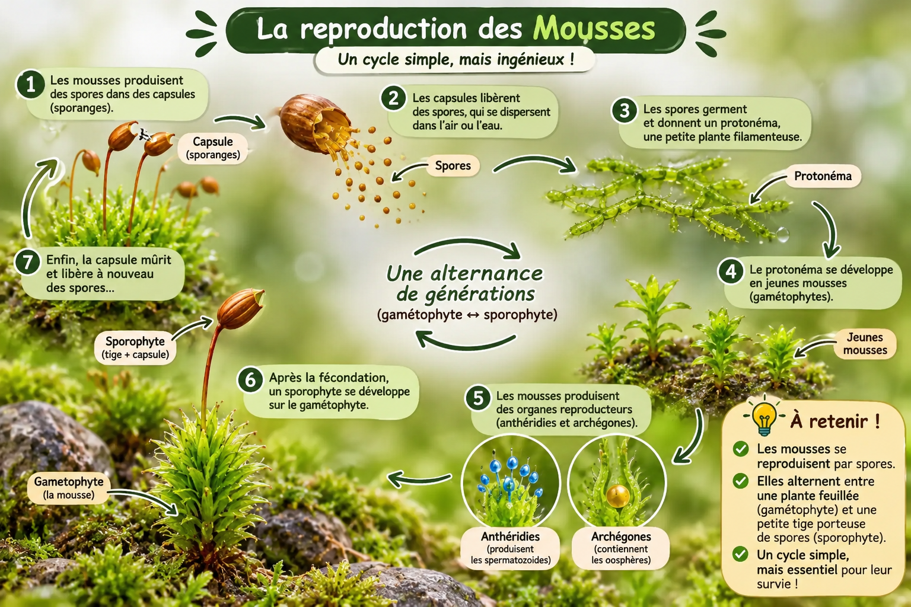
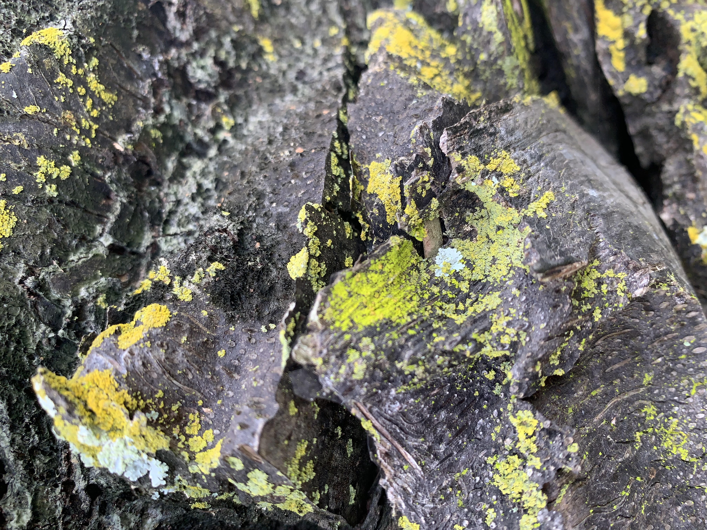

Problème résolu-évolution:
Sortir de l'eau et coloniser la terre ferme.;
Sortir de l'eau et coloniser la terre ferme.;
C'est le premier groupe à vivre sur terre, mais elles restent petites et dépendantes de l'humidité. Elles n'ont pas de vaisseaux pour transporter l'eau, donc elles ne peuvent pas grandir. Et pour se reproduire, elles ont encore besoin d'eau, car le spermatozoïde doit nager jusqu'à l'ovule.

Mousses
Cuticule, stomates,rhizoïdes >
≈ 470 Ma · Ordovicien

